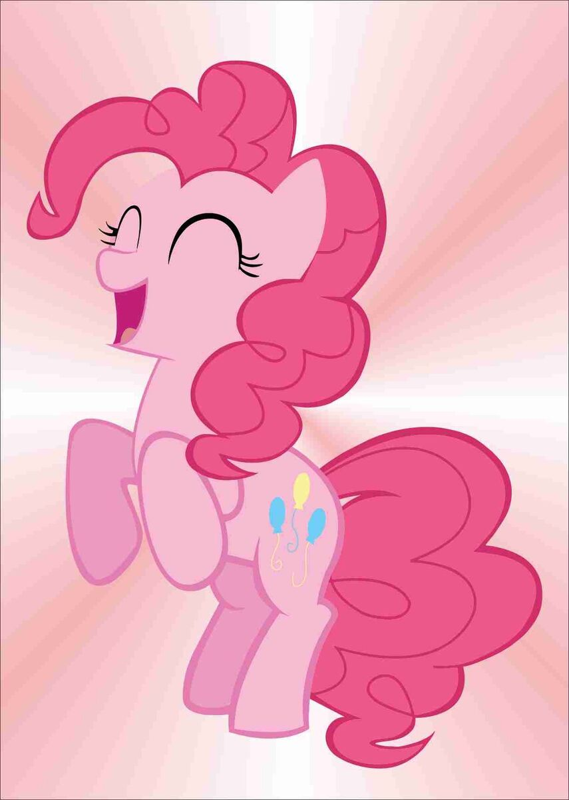

Pinkie Pie's Cutie Mark
In the show, a pony's cutie mark appears on their flank when they discover what makes them unique. Mentioned below are a few examples, including Pinkie Pie's Cutie Mark:
- Three balloons, Pinkie Pie
- Rainbow lightning bolt, Rainbow Dash
- Three pink butterflies, Fluttershy
- Three red apples, Applejack
- Three lozenge diamonds, Rarity